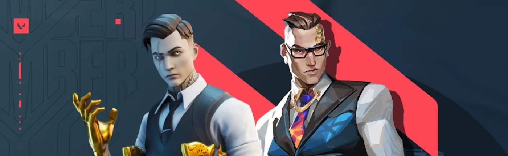
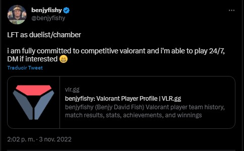

Estrella de Fortnite deja la escena del Battle Royale para comprometerse de lleno con VALORANT
El shooter táctico de Riot Games sigue atrayendo a más jugadores de alto calibre
VALORANT, el shooter táctico de Riot Games, tiene una escena competitiva que está creciendo a pasos agigantados. Un claro ejemplo de esto lo tenemos en que está atrayendo a profesionales especializados en otros juegos, como ahora pasó con un profesional de Fortnite.
Estamos hablando de Benjy “benjyfishy” Fish, un profesional de Fortnite que, en junio de 2022, tomó la decisión de abandonar Fortnite para dedicarse a crear contenido para VALORANT. Después de meses en esta nueva posición, el talentoso jugador decidió que era momento de comprometerse de lleno, por lo que dejará el Battle Royale de Epic Games en el olvido para buscar una carrera como profesional de VALORANT.
De este modo, ahora benjyfishy está buscando lugar en un equipo de VALORANT. Su intención es tomar el rol de duelista o como Chamber, personaje que tiene rol de centinela.
Para llamar la atención de algún equipo profesional, benjyfishy ha pasado los últimos 2 meses participando en abiertos de clasificación en Europa como parte de Dragonslayerzzz. En este periodo ha conseguido buenos números, con un ratio K/D de 1.48 así como 63% de victoria en sus duelos iniciales.
El cambio de benjyfishy a VALORANT no fue repentino. Lo decimos puesto que el joven de 18 años perdió el amor por Fortnite justo cuando era uno de los mejores jugadores del mundo. Es por esto que decidió buscar nuevos horizontes en el mundo del gaming competitivo.